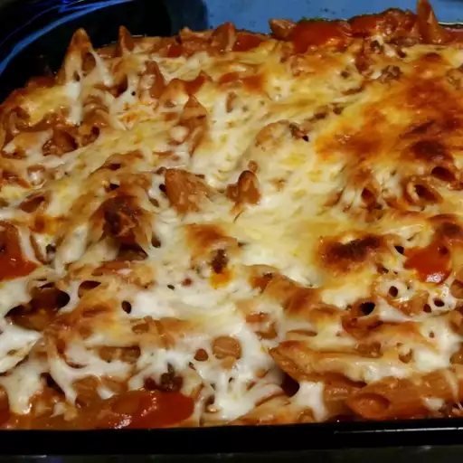

Baked

Description
This oven-baked pasta is a favorite of my children, who request this recipe often.
Ingredients
- cooking spray
- 1 pound lean ground beef
- 2 (15 ounce) cans tomato sauce
- 12 ounces brown gravy
- ½ cup half-and-half
- ½ cup grated Parmesan cheese
- 3 cloves garlic, minced
- 1 teaspoon dried oregano
- 1 teaspoon dried basil
- 1 (16 ounce) package dry ziti pasta
- 1 cup shredded mozzarella cheese
Steps
- Preheat the oven to 350 degrees F (175 degrees C). Grease a 9x13-inch baking dish with cooking spray.
- Heat a large frying pan or Dutch oven over medium-high heat. Cook and stir ground beef in the hot pan until browned and crumbly, 5 to 7 minutes. Add tomato sauce, gravy, half-and-half,
Parmesan cheese, garlic, oregano, and basil. Simmer for 30 minutes.
- Meanwhile, fill a large pot with lightly salted water and bring to a rolling boil. Stir in ziti, bring back to a boil,
and cook pasta over medium heat until tender yet firm to the bite, 10 to 12 minutes. Drain.
- Stir ziti into meat sauce, then spread into the prepared baking dish. Sprinkle top with mozzarella cheese.
- Bake in the preheated oven until bubbly, 20 to 30 minutes.